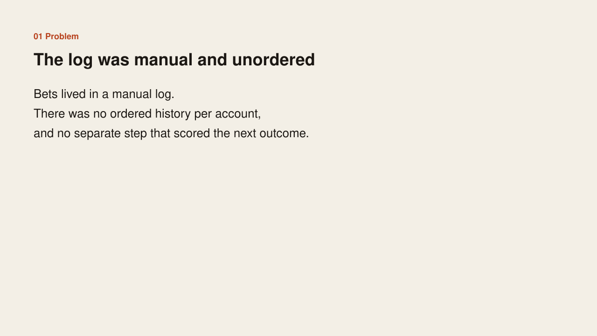
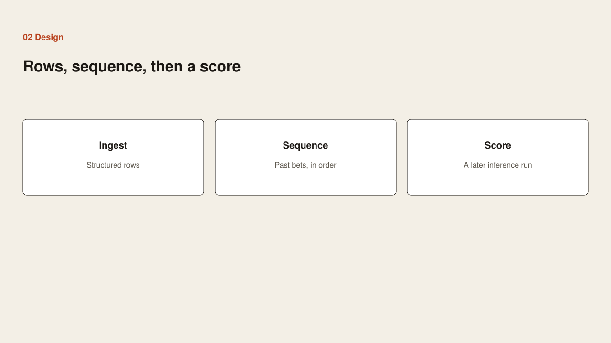
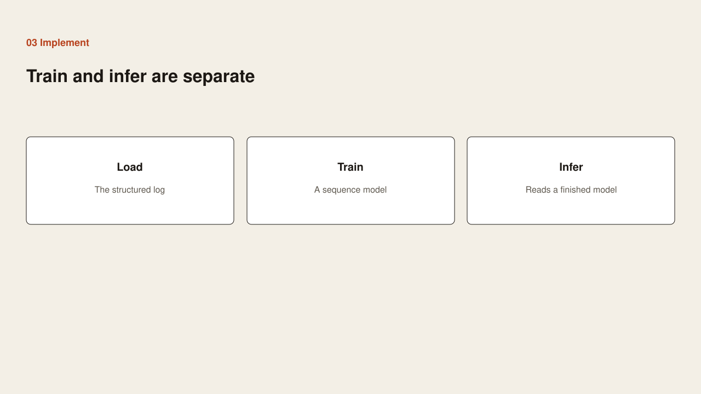
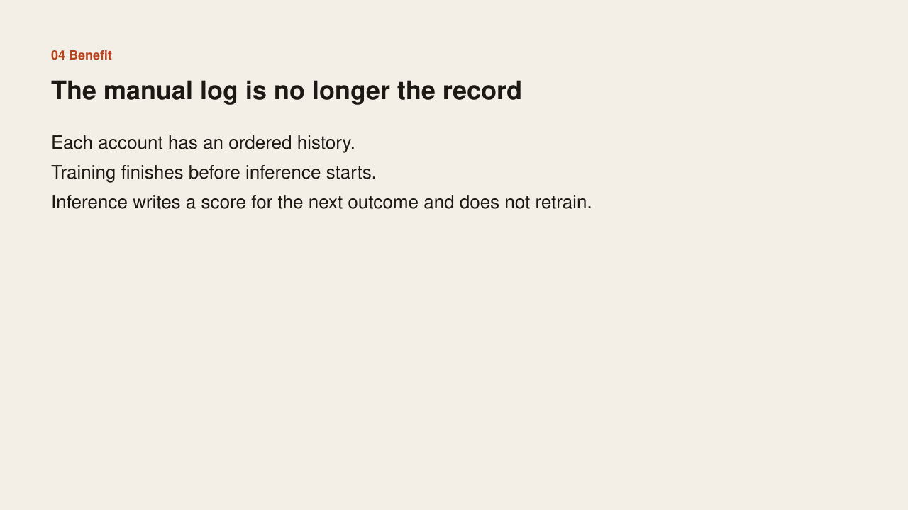

Problem
Problem

Bets lived in a manual log. There was no ordered history per account, and no separate step that scored the next outcome.
Case study
Problem

Bets lived in a manual log. There was no ordered history per account, and no separate step that scored the next outcome.
Design

Replace the manual log with structured rows. Keep past bets in order, per account. Train a sequence model. Score later, in a separate run.
Implementation

Load the structured log. Train the sequence model to completion. Run inference only against that finished model, and do not retrain during inference.
Benefit

Each account has an ordered history. Training is over before a score is written. Inference writes a score for the next outcome and stops.